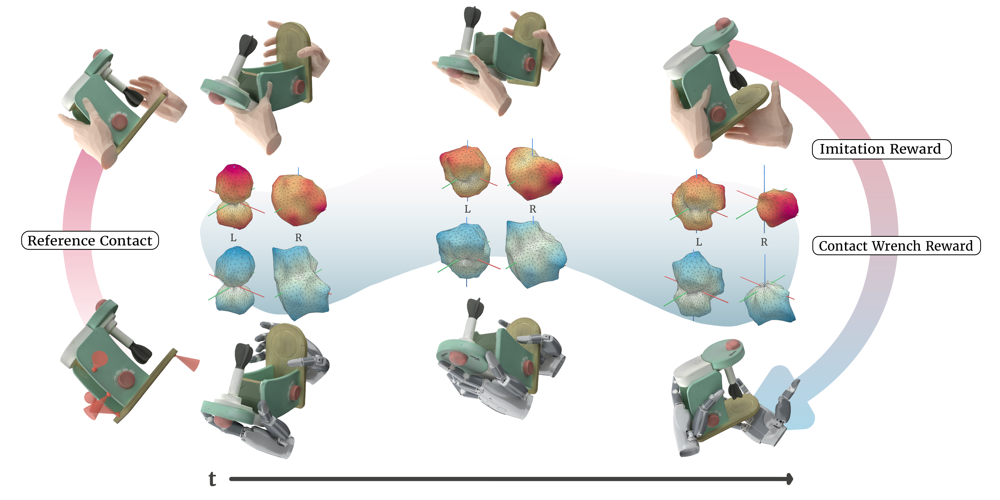
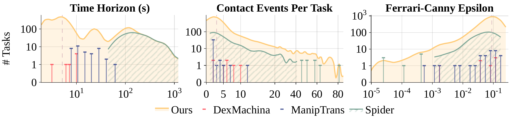
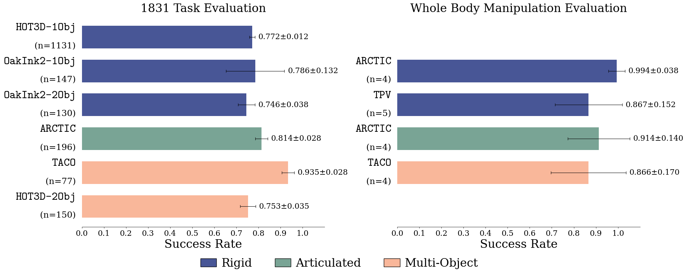
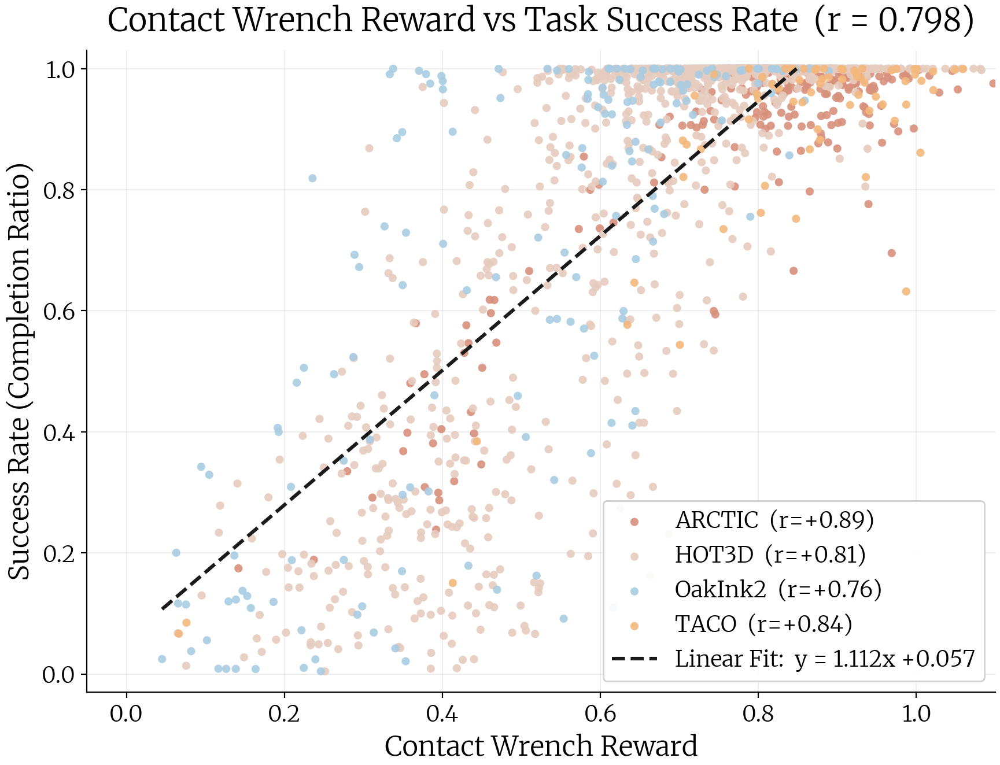
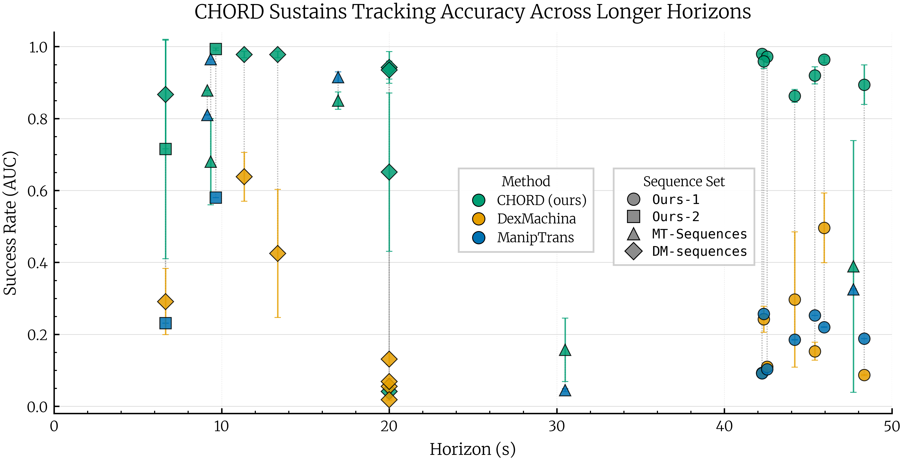

CHORD
Learning Dexterous Manipulation Using Contact Wrench Guidance From Human Demonstration
Overview
CHORD transfers human manipulation skills to dexterous robot policies through an object-centric contact-wrench representation — matching how contact moves an object, not just where it occurs.
This video includes voiceover narration — unmute to listen.
Abstract
Dexterous robot manipulation can benefit from the abundance of human demonstrations, but transferring such demonstrations to robot policies remains challenging. We present CHORD, a framework for long-horizon manipulation of rigid and articulated objects with reinforcement learning. The key idea is object-centric contact wrench space guidance: we represent human and robot motions by the forces and torques they can induce on the object, enabling similarity to be measured by the induced instantaneous motions. This guidance makes reinforcement learning more scalable for contact-rich dexterous manipulation. We further introduce a large-scale simulation benchmark with 4,739 bimanual dexterous manipulation tasks, constructed from motion-capture datasets and reconstructed in-house videos. Evaluated on 1,831 benchmark tasks, CHORD achieves an average success rate of 82.12%, demonstrating strong scalability. CHORD also generalizes to whole-body manipulation from hand-only and third-person demonstrations, achieving a 90.77% success rate, and the learned policies transfer to the real world in both open-loop and closed-loop settings.
Contact Wrench Guidance
Position guidance targets where contact occurs; wrench guidance targets how contact affects object motion. Hover a panel to reveal the result.


Hover Position or Wrench to see the resulting manipulation in full.

Position Guidance
The red marker is the human contact; the heat map shows nearby locations that look plausible under a position-matching objective. But locations close in space induce different contact normals and moment arms — matching where contact occurs can still produce unstable object motion.

Wrench Guidance · Ours
CHORD represents each contact with a six-dimensional wrench combining force and torque, computed from the contact location, surface normal, and moment arm. Matching wrenches asks how the contact moves the object — reproducing the force-and-torque generation behind the demonstrated manipulation.
Turning demonstrated contacts into rewards
CHORD converts demonstrated contacts and contact wrenches into rewards for learning dexterous robot-hand policies. Hover a numbered region to explore each stage.

Dexterous Manipulation Benchmark with Human Demonstrations
Large-scale, long-horizon, contact-rich tasks paired with human demonstrations spanning rigid, articulated, and multi-object manipulation.

Capabilities
A unified contact-wrench representation carries human manipulation skills across diverse manipulation behaviors, long-horizon tasks, whole-body embodiments, and real-world hardware.
Diverse Manipulation Behaviors
Contact-wrench guidance transfers across grasping, reorientation, handovers, and tool use.
Long-Horizon Manipulation
CHORD preserves contact intent over extended sequences with dense contact events.
Large-Scale Evaluation
We open-source 4,739 simulation-ready dexterous manipulation tasks paired with human demonstrations. Across 1,831 diverse evaluations, CHORD reaches an average success rate of 82.12%.
Hover a clip to preview
Whole-Body Loco-Manipulation
The contact-wrench representation is embodiment-agnostic: with a whole-body motion inpainting module, humanoid robots equipped with three-fingered hands can learn from hand-only and third-person-view demonstrations.
Hand-Only Demonstrations
Third-Person-View Demonstrations
Real-World Deployment
Learned policies transfer from simulation to real dexterous hands.
Quantitative Evaluation
CHORD sustains high success at scale and outperforms prior methods, succeeding across rigid, articulated, and multi-object manipulation.
Comparison With Prior Methods
| Task Suite | Metric | Ref. Method | Ref. Score | Our Score |
|---|---|---|---|---|
DM |
AUC | DexMachina | 0.232 ± 0.214 | 0.687 ± 0.358 |
MT |
MT-SR | ManipTrans | 0.428 | 0.639 |
SP |
SP-SR | Spider | 0.333 ± 0.488 | 0.359 ± 0.482 |
Ours-1 |
AUC | DexMachina | 0.211 ± 0.138 | 0.895 ± 0.052 |
Ours-1 |
SP-SR | Spider | 0.133 ± 0.327 | 0.999 ± 0.000 |
Ours-2 |
SP-SR | Spider | 0.533 ± 0.503 | 0.982 ± 0.022 |
Scores are comparable within each row; baselines use different task suites and evaluation protocols.
Large-Scale and Whole-Body Evaluation Results


